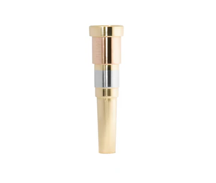
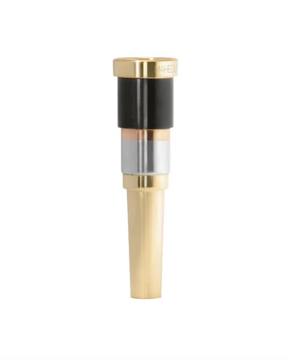
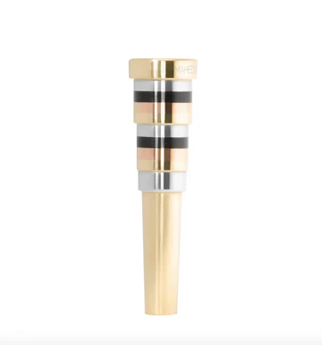

Nuestras boquillas
-

Boquilla Lac-10
Material: Latón,Alpaca y Cobre
Precio: $660
Apoyo de labio: Profundidades de taza - acabado del apoyo: -

Boquilla Lan-10
Material: Laton,Alpaca y negro
Precio: $550
Apoyo de labio: Profundidades de taza - acabado del apoyo: -

Boquilla Mark-1
Material: Laton,Alpaca y Plata
Precio: $450
Apoyo de labio: Profundidades de taza - acabado del apoyo: -

Boquilla Mark-9
Material: Latón y Cobre
Precio: $550
Apoyo de labio: Profundidades de taza - acabado del apoyo: -

Boquilla Mark-B
Material: Cobre,Laton,Alpaca y negro
Precio: $550
Apoyo de labio: Profundidades de taza - acabado del apoyo: